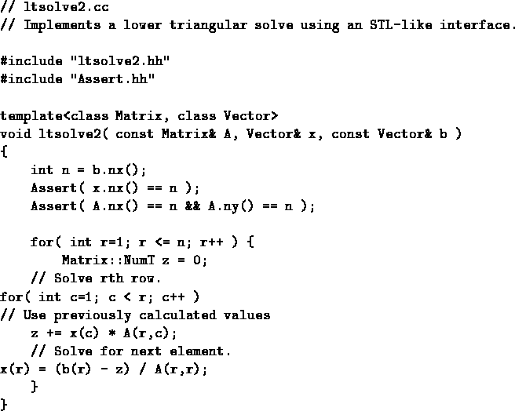

Next: Refinement
Up: Container-Free Numerical Algorithms in
Previous: Modern C++ Culture
Taking a cue from the STL, we can reformulate the algorithm in such a
way that it is parameterized on the types of containers which will be
passed to it. The result is in Figure 3. By using the
template parameters Matrix and Vector to represent two and
one dimensional containers respectively, ltsolve2 is couched as
a generic algorithm that can be called with any types of user defined
containers. This is a big improvement over ltsolve1.
Figure 3:
First attempt at parameterizing the solve on the types of the user's data containers.
|  |
Well, it can be called. Whether or not it can be compiled
is another question entirely! The central issue is that of
constraints. This expression of the algorithm places several
constraints on the templating argument types Matrix and Vector. These constraints generally fall into two categories. The
first of these are properly called ``template constraints'', and
represent specific services that a template is required to
provide. The second category are qualitatively different, and for
lack of pre-existing terminology, I will call them ``implicit
constraints'', representing behaviors that a template is
required to exhibit. Whether or not ltsolve2 can be compiled depends on the services provided by the types Matrix and Vector; whether or not it executes correctly and
produces the right answer depends on the behaviors exhibited by
objects of these types.
The template constraints placed on (services required of) Matrix
are:
- Must have a method ``operator()(int,int) const'' which can be
used to index the contained data.
- Must have methods ``int nx() const'' and ``int ny()
const'' which can be used to determine the dimensions of the
contained data.
- Must export a type ``NumT'' which represents the type of
the contained data.
The template constraints on Vector are similar:
- Must have methods ``operator()(int)'' and ``operator()(int) const'' which can be used to index the data.
- Must have a method ``int nx() const'' for determining the
number of contained elements.
The principle implicit constraint which ltsolve2 places on
objects of both of these types is that they must support ``one based
indexing''.
Let us evaluate this reformulation. There are several points to note:
- ltsolve2 can be called with pretty much any argument types
the user may have, as long as they comply with the constraints
documented above.
- The template (service) constraints are in some sense reasonable,
in that they represent requirements that one would naively expect
numeric container classes to be able to satisfy.
- They nevertheless can be problematic. Specifically, the coding
of this algorithm requires that Vector not only be able to say
how many elements it contains, but moreover, that it be able to say so
when asked the ``.nx()'' question. A particularly noteworthy
container that cannot do this is the std::vector<T> class, which
uses a method ``int size() const'' to report this information.
The central point here is that a user might have to modify a container
class in order to make it satisfy the constraints placed on it by the
ltsolve2 function, and this can be burdensome indeed! Some
classes may not be able to be modified for one reason or another,
- Finally, the implicit constraint of using one based indexing is
particularly vexing. Making a container support one based indexing,
if it already employs zero based indexing, would require changes to
other parts of code. Such a cost is basically too high to bear, and
the result will likely be that the user would still feel compelled to
get in and muck with the ltsolve2 source itself.
Next: Refinement
Up: Container-Free Numerical Algorithms in
Previous: Modern C++ Culture
Mark Gray
1998-05-20